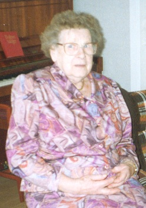

Född
i Hol (P)
Född
i Hol (P)
|
Född
i Ambjörnsgården, Hol (P)
Död omkring 1995 |
 |
|
Greta Eliasson
Född i Ambjörnsgården, Hol (P) Död omkring 1995 |
F
August Eliasson.
|
||
|
M
Hilda Eliasabet Jansson.
Född 1883 i Hökared, Ljur (P) |
MF
Janne Wilhelm Augustsson.
Född 1859 i Ljur (P) 1 . |
MFF August Andersson. Född 1830 i Ljur (P) |
|
|
MFM Johanna Kristina Andersdotter. Född 1836 i Ljur (P) 1 . |
|||
|
MM
Matilda Andersdotter.
Född 1858 i Nårunga (P) 1 . Död mellan 1936 och 1937 |
MMF Anders Magnusson. Född 1817-09-20 i Storgården, Lida, Nårunga (P) 2 . |
||
|
MMM Stina Andreasdotter. Född 1820-09-20 i Kulvik 2 . Död 1881 |
|
Gift
Knut Johansson. |
Framställd 2026-03-14 med hjälp av Disgen version 2025.